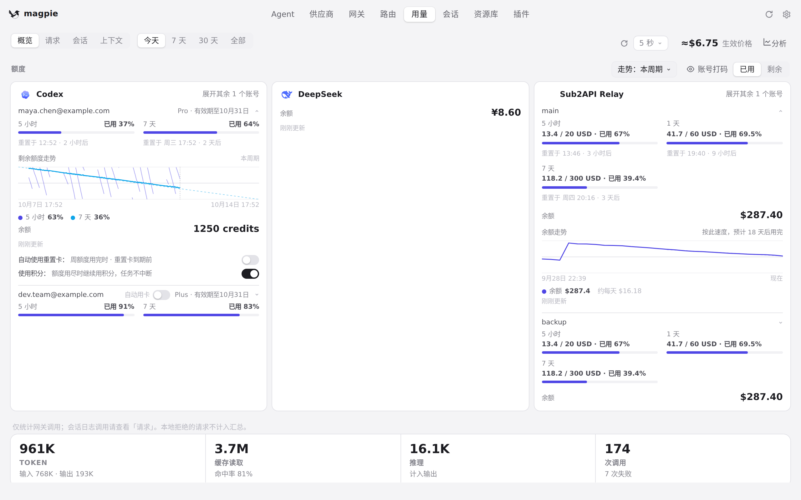
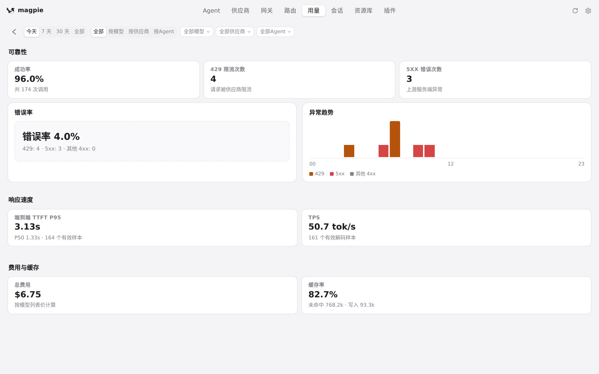
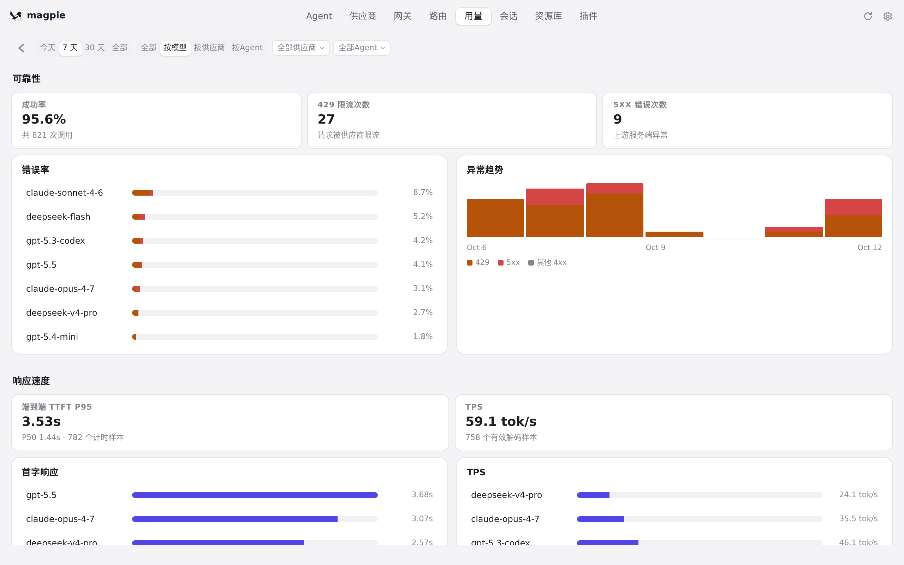
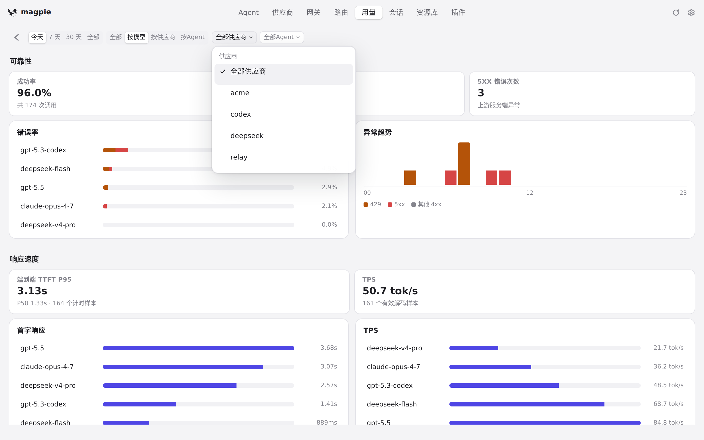
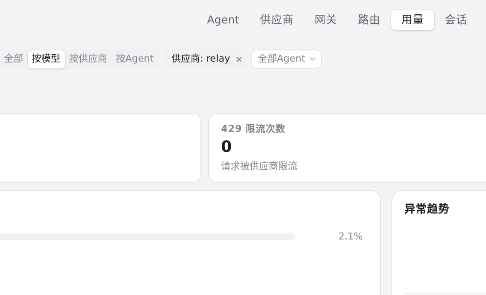
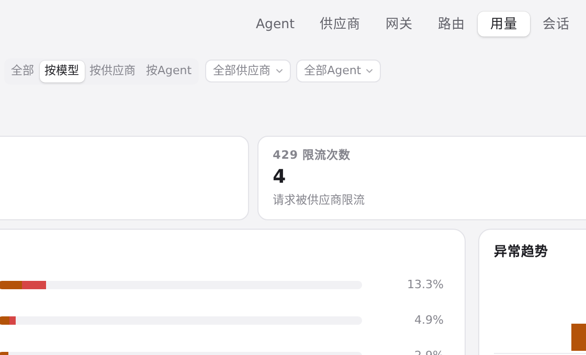
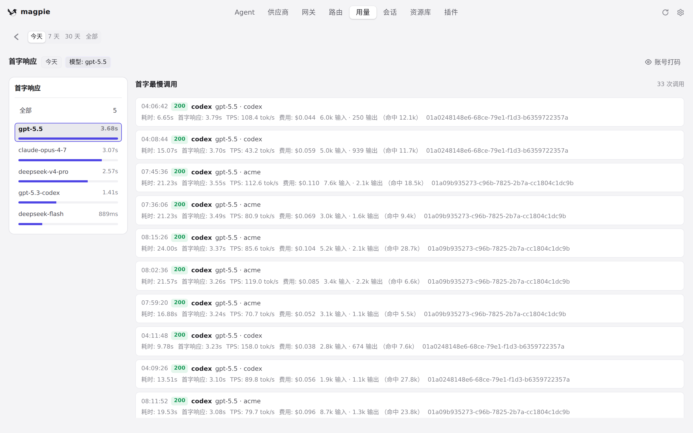
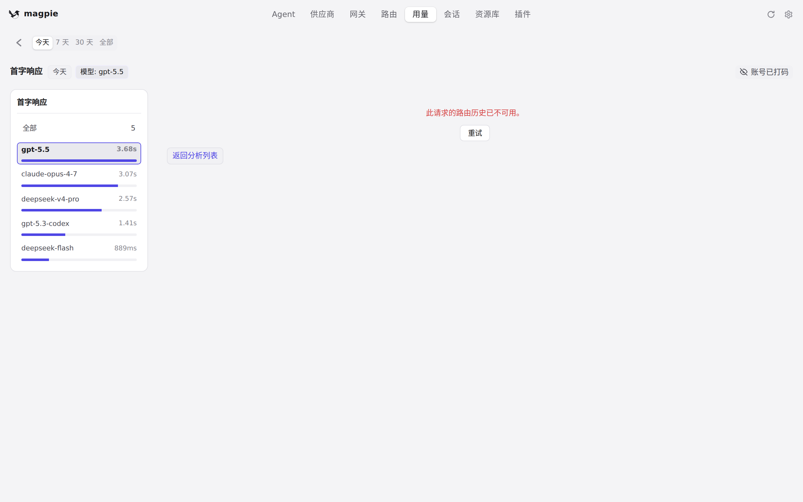

#704 界面预览
commit 4cb9851 · 回到 PR · 用量页顶部新增「分析」入口，打开只读的质量与分析看板（可靠性、响应速度、费用与缓存六项图表，支持今天/7 天/30 天/全部与全部/按模型/按供应商/按Agent 维度、互斥筛选且悬停可单独清空）；点击排行行或 KPI 进入左右两栏的下钻页，右侧前 50 条调用可就地展开该次请求的路由详情，标题行右侧另有独立的「账号打码」按钮。
红线是鼠标走过的轨迹，红色圆环是一次点击；底部文字是这一步在做什么。空格暂停，← → 逐段查看。

用量页进入分析看板 · 用量页顶部的「分析」入口

用量页进入分析看板 · 分析看板：可靠性、响应速度、费用与缓存三组图表

用量页进入分析看板 · 「按模型」维度下的各项排行

按供应商筛选与清空 · 筛选弹层里的候选供应商

按供应商筛选与清空 · 已选筛选在悬停时出现的清空按钮

按供应商筛选与清空 · 清空后的筛选

下钻页与调用路由 · 下钻页：左侧排行，右侧该指标的前 50 条调用
下钻页与调用路由 · 右侧就地展开该调用的路由详情

下钻页与调用路由 · 打码按钮打开后的下钻页